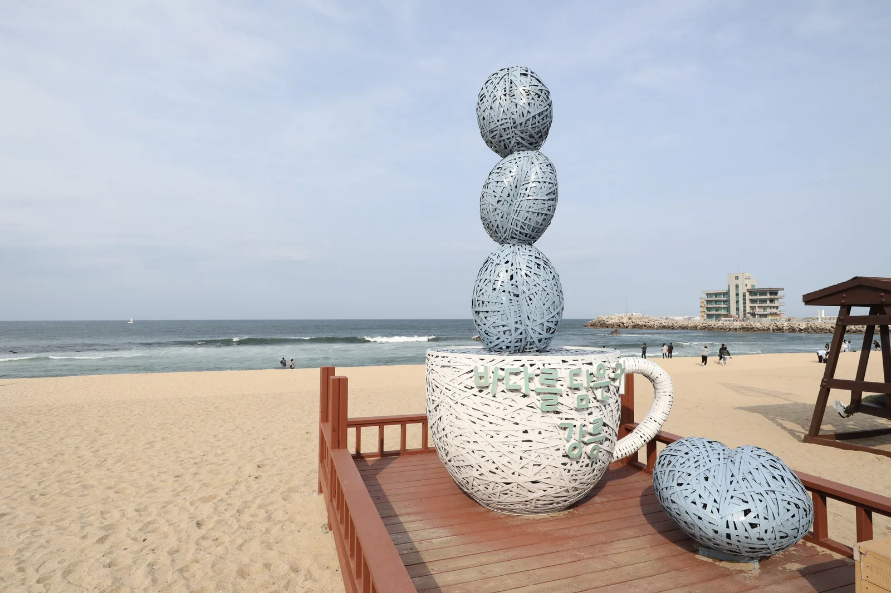
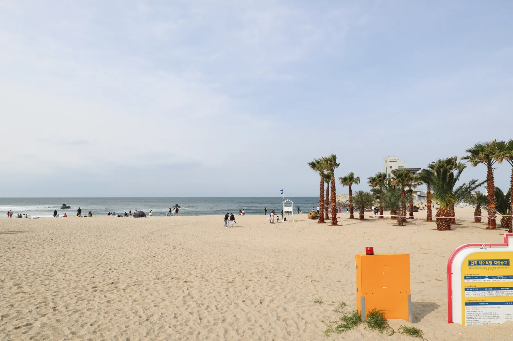
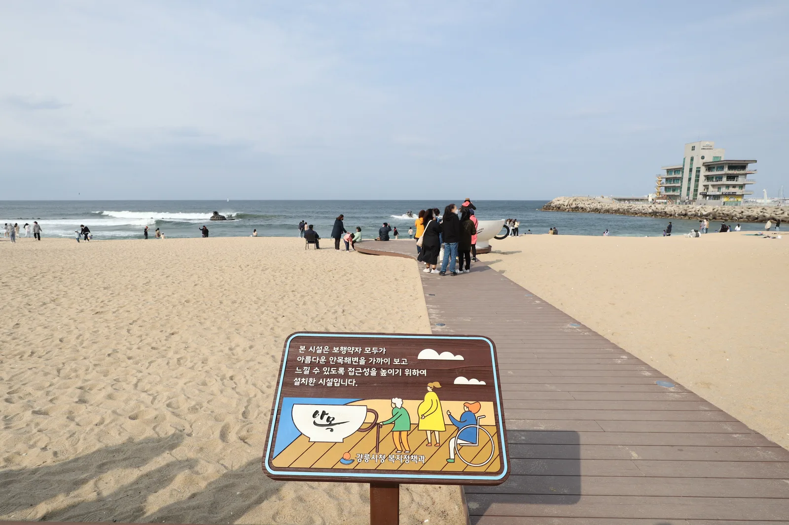

▲ 강릉 안목해변의 대형 커피컵 조형물. 이 일대가 커피거리이자 강릉커피축제의 무대다 ⓒ Wikimedia Commons (CC BY-SA 4.0)
2026 강릉커피축제가 10월 21일(수)부터 25일(일)까지 5일간 열린다. 장소는 강릉시 창해로14번길 일대, 흔히 '안목해변 커피거리'라 불리는 곳이다. 문제는 이 좁은 해안 도로 일대가 평소에도 주차난으로 악명 높다는 점이다. 강릉항 인근 주차장은 평일에도 오전 9시면 만차가 되는 것으로 알려져 있다.
1. 좁은 해안도로가 만드는 구조적 병목

▲ 안목해변 백사장. 해변을 따라 늘어선 카페 사이로 도로가 한 줄뿐이라 주차 공간이 절대적으로 부족하다 ⓒ Wikimedia Commons (CC BY-SA 4.0)
안목해변 커피거리는 해변을 따라 카페가 밀집한 좁고 긴 형태의 상권이다. 도로 폭 자체가 넓지 않아 노상 주차 공간이 제한적이고, 근처 공영주차장 역시 규모가 크지 않다. 평소 주말에도 오전 9시 무렵이면 자리가 동나는데, 축제 기간에는 여기에 방문객이 더해지므로 체감 혼잡도가 한층 커진다.
2. 방문 시간대가 성패를 가른다

▲ 안목해변의 커피컵 모양 포토존 벤치. 이런 명소일수록 이른 시간 방문이 유리하다 ⓒ Wikimedia Commons (CC BY-SA 4.0)
가장 현실적인 전략은 이른 시간 도착이다. 오전 9시 이전에 도착해 자리를 잡거나, 반대로 늦은 오후~저녁 시간대에 방문해 낮 동안의 혼잡을 피하는 방법이 있다. 축제 프로그램 중 야간 조명이나 커피콘서트가 있다면 저녁 방문이 오히려 여유로울 수 있다.
3. 대안 — 외곽 숙소·KTX 연계
참고 2026년 축제 기간이 가을 연휴와 겹칠 경우 숙소 예약 경쟁도 함께 심해진다. 안목해변 인근 대신 조금 외곽의 숙소를 잡거나, KTX 강릉역에서 대중교통으로 접근하는 방법도 고려할 만하다.
자차 방문이 꼭 필요하지 않다면 KTX로 강릉역까지 이동한 뒤 시내버스나 택시로 커피거리에 진입하는 방법이 주차 스트레스를 가장 확실하게 줄이는 선택이다. 자차를 가져간다면 숙소 위치를 안목해변에서 조금 떨어진 곳으로 잡고, 그곳에 주차한 뒤 도보나 대중교통으로 이동하는 방식도 대안이 된다.

▲ 안목해변 목재 데크. 해변을 따라 이어지는 이 구간이 커피축제의 주 동선이다 ⓒ Wikimedia Commons (CC BY-SA 4.0)
4. 정리
체크포인트
- 강릉항 인근 주차장은 평시에도 오전 9시 만차다. 축제 기간엔 더 이르게 채워질 수 있다.
- 이른 아침 또는 늦은 저녁 방문이 상대적으로 여유롭다.
- 연휴와 겹치면 숙소·교통 모두 경쟁이 심해진다. 예약은 최소 2~3개월 전에 서두르는 것이 안전하다.
- 자차 부담을 줄이려면 KTX 강릉역 + 대중교통 조합도 고려할 만하다.
문의는 강릉문화재단 033-647-6802다.